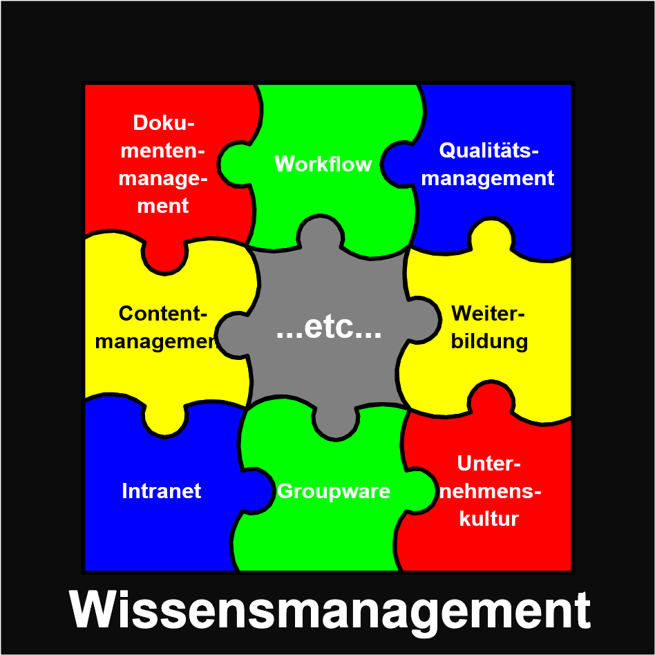

Einleitung
Themenstellung
Rechnergestütztes Knowledge Management erweist sich als Herausforderung für alle gesellschaftlichen Organisationsformen, die bei der Verfolgung großer, komplexer Aufgaben räumlich und zeitlich flexibel operieren. Mit vorhandenen Werkzeugen sind Einschränkungen vorhanden, die Akzeptanz und Effizienz beschneiden.
In kritischer Distanz zum Stand der Technik soll ein Konzept für das Wissensmanagement in einer im Informationstechnologie-Sektor angesiedelten Hochtechnologie-Einrichtung erarbeitet werden.
Neben der Gestaltung der Funktionalität (Berücksichtigung heterogener Plattformen, Nutzung vorhandener Component Ware) ist der Entwurf einer geeigneten, vorzugsweise individuell gestaltbaren Mensch-Maschine-Schnittstelle, die alle Anwender zur Nutzung motiviert, wichtiger Bestandteil der Aufgabenstellung.
Schnittstellen zu anderen Disziplinen (zum Beispiel Psychologie, Künstliche Intelligenz) sind zu identifizieren. Am Ende der Arbeit soll ein in der Praxis einsetzbarer Prototyp stehen, der alle Eigenschaften des Konzepts in sich trägt und erweiterbar ist.
Was ist Wissensmanagement?
Der Begriff Wissensmanagement ist sehr verbreitet. Es gibt beinahe keine Zeitschrift aus den Bereichen Informatik, Informationstechnologie oder Wirtschaft, die noch keinen Beitrag zu diesem Thema veröffentlicht hat. Die Auffassungen des Begriffs selbst sind allerdings sehr unterschiedlich. Das Spektrum reicht von der Anschaffung einer Kaffeemaschine, um die interne Kommunikation zu fördern, über reine Softwarelösungen bis hin zur kompletten Restrukturierung der Unternehmenskultur.
Dieser Umstand ist Grund genug, den Begriff Wissensmanagement zumindest für den Rahmen dieser Arbeit zu definieren. Die Grundlage hierfür ist eine Begriffsdefinition des Terminus Wissen selbst, denn wie könnte eine Ressource gehandhabt werden (engl. to manage: handhaben), wenn diese nicht genau zu fassen ist?
Wissen
Die Begriffe Zeichen, Daten, Informationen und Wissen stehen miteinander in Verbindung 1. Zeichen aus einem definierten Zeichenvorrat werden zu Daten, wenn sie nach festgelegten Syntaxregeln kombiniert werden. Wenn diese Daten in einen Kontext gestellt werden, so wird aus den Daten Information. Durch die Vernetzung einzelner Informationen können diese nutzbar gemacht werden. Ein solches Informationsnetz kann als Wissen bezeichnet werden.
Die Wissensbasis in einem Unternehmen besteht immer aus individuellen und kollektiven Fähigkeiten (siehe 1). Um Individuum und Kollektiv in effizienter Weise zusammenzuführen, bedarf es der beiden Faktoren Kommunikation und Transparenz:
- Kommunikation lässt aus Individuen ein Kollektiv entstehen (nach 2, Kapitel 4). Die entstehende, vernetzte, kollektive Wissensbasis ist dabei größer als die Summe des Individualwissens.
- Mit Transparenz ist nicht die völlige Transparenz aller in einer Organisation vorhandenen Wissenselemente gemeint. Die totale Transparenz führt zu einer Informationsflut, die eher verwirrt als weiterhilft. Vielmehr geht es darum, Wissenselemente genau an die Stelle zu bringen, an denen sie benötigt werden. Die Wissensbasis muss also so transparent wie nötig und gleichzeitig so übersichtlich wie möglich sein.
Die Wissensdefinition, die im Rahmen dieser Arbeit gelten soll, ist ein Kompromiss aus verschiedenen Ansätzen (siehe 1 und 3):
Wissen bezeichnet die Gesamtheit der Kenntnisse und Fähigkeiten, die Individuen und Teams zur Lösung von Problemen einsetzen können.
Dieses Wissen ist eine Mischung aus Erfahrungen, Wertvorstellungen, Kontextinformationen und Fachkenntnissen, die in ihrer Gesamtheit einen Strukturrahmen zur Beurteilung und Eingliederung neuer Erfahrungen und Informationen bietet.
Wissensmanagement
Losgelöst von allen philosophischen Ansätzen zum Thema Wissensmanagement soll hier ein eher pragmatischer Ansatz gelten.
Wissensmanagement umfasst alle Anstrengungen, die unternommen werden, um Mitarbeiter mit dem Wissen zu versorgen, das sie benötigen, um für das Unternehmen mit optimaler Effizienz tätig zu sein.
Thematisiert wird sowohl die Frage nach der technischen Plattform, auf der dieser Informations-/Wissensaustausch stattfinden kann, als auch Methoden und Werkzeuge**, um den Austausch selbst zu erleichtern.
Wissensmanagementsystem
Viele Anbieter vertreiben Produkte unter dem Schlagwort Wissensmanagement, die es auch schon vor der "Wissensmanagementwelle" gab. Dazu gehören insbesondere Dokumentenmanagementsysteme, Groupware/Kollaborationssysteme, Suchmaschinen, Workflow- und Intranetsysteme.
Den Grund hierfür liefert eine Studie des Marktforschungsinstituts IDC vom September 1999 4. Dieser Studie zufolge wird der Markt für Wissensmanagementsoftware jährlich um 40-50% wachsen und im Jahr 2003 ein Volumen von 2 Milliarden US$ erreichen. Aus diesem Grund ist es wichtig, dass die am Markt befindlichen Systeme einer kritischen Evaluierung unterzogen werden.
Um ein Wissensmanagementsystem zu implementieren, muss ermittelt werden, welche Werkzeuge das Unternehmen benötigt. Diese Werkzeuge werden dann durch eine geeignete Kombination von Produkten zur Verfügung gestellt. Die Interoperation der Einzelprodukte durch ein standardisiertes Austauschformat (zum Beispiel XML) muss gewährleistet sein. Einen ähnlichen Ansatz beschreibt 5.
Im Folgenden ist unter dem Begriff Wissensmanagementsystem ein Verbund von Werkzeugen zu verstehen, mit denen Wissensmanagement, nach der bereits formulierten Definition, betrieben werden kann. Anders formuliert stellt ein Wissensmanagementsystem die technische Plattform des Wissensmanagements dar (neben der nicht-technischen, wie Fortbildungen, Seminaren, etc.).
Wissensmanagement kann nur zu einem Teil durch die Einrichtung eines IT Systems etabliert werden (3 spricht von einem Drittel), die restlichen Bestandteile sind Unternehmenskultur, Anreizsystem, Inhalt, Mitarbeitermotivation und weitere Faktoren.

Einordnung dieser Diplomarbeit in einen Gesamtzusammenhang
Um den Beitrag dieser Diplomarbeit zum Thema Wissensmanagement am Fraunhofer-Institut für Integrierte Schaltungen (IIS) richtig einschätzen zu können, ist es wichtig, den Gesamtzusammenhang, in dem sie steht, zu kennen.
Das Thema Wissensmanagement wurde am IIS zum ersten Mal in einem Projekt mit dem Fraunhofer Institut für Arbeitsorganisation (IAO, Stuttgart) aufgebracht. Das IAO hatte von der Fraunhofer-Zentralverwaltung (ZV) in München den Auftrag, herauszufinden, wie man Wissensmanagement an den Instituten der Fraunhofer-Gesellschaft implementieren kann. Zu diesem Zweck sollte in Zusammenarbeit mit drei Pilotinstituten aus dem Fraunhofer-Verbund-Mikroelektronik ein generischer Leitfaden erstellt werden, der anderen Instituten bei der Einführung von Wissensmanagement eine Anleitung geben sollte.
Bei der Realisierung dieses Projekts wurden an den Pilotinstituten durch das IAO Sensibilisierungsworkshops durchgeführt, die die Institutsleitungen und die Mitarbeiter in die Thematik einführen und den Bedarf an den einzelnen Instituten erfassen sollten. Parallel dazu wurde ein Prototyp auf Basis von Lotus Notes R5 entwickelt, der die erarbeiteten Methoden unterstützen sollte. Aufbauend auf diesem Prototypen, zusammen mit dem generischen Leitfaden, sollten die Institute in der Lage sein, Wissensmanagement zu implementieren.
Nach Evaluierung des Prototypen am IIS wurde das Urteil gefällt, dass die gesamte Arbeit, bestehend aus Leitfaden und Prototyp, für das IIS nur von sehr geringem Nutzen ist und deswegen nicht weiter verfolgt werden sollte.
Eine wichtige Erkenntnis, die aus diesem Projekt gezogen werden konnte, ist, dass es sehr schwierig oder gar unmöglich ist, Wissensmanagement von außen, ohne genaue Kenntnisse der Struktur eines Unternehmens zu implementieren.
Da die Einführung von Wissensmanagement immer auch mit einem Eingriff in die Unternehmenskultur verbunden ist, ist eine Unterstützung durch die Unternehmensleitung unbedingt notwendig.
Im Rahmen dieser Diplomarbeit soll ein Konzept entwickelt werden, mit dem begonnen werden kann, Wissensmanagement am IIS zu implementieren. Dieses Konzept soll, im Gegensatz zum Ansatz des IAO, auf die speziellen Bedingungen am IIS eingehen. Des weiteren soll ein Prototyp entwickelt werden, der die Funktion eines Wissensmanagementsystems übernehmen kann und die Elemente des Konzepts in sich trägt.
Nach Beendigung der Diplomarbeit kann durch die Institutsleitung die Entscheidung getroffen werden, ob dieser Prototyp am IIS eingesetzt werden soll.
-
Gilbert J. Probst, Steffen Raub, and Kai Romhardt. Wissen managen: Wie Unternehmen ihre wertvollste Ressource optimal Nutzen. Frankfurter Allgemeine Buch, Frankfurt, 3. auflage edition, 1999. OCLC: 1357010750. URL: https://amzn.to/3M2jCBf. ↩↩↩
-
Kai Romhardt. Interventionen in die organisatorische Wissensbasis zwischen Theorie und Praxis Welchen Beitrag kann die Systemtheorie leisten? 1996. URL: https://enbiz.de/wmk/papers/public/WissenUndSystemtheorie/. ↩
-
Thomas H. Davenport, Laurence Prusak, and Helga Höhlein. Wenn Ihr Unternehmen wüsste, was es alles weiss: das Praxisbuch zum Wissensmanagement. Verlag moderne industrie, Landsberg/Lech, 2. auflage edition, 1999. ISBN 978-3-478-36470-6. OCLC: 887095410. URL: https://search.worldcat.org/de/title/Wenn-Ihr-Unternehmen-wusste-was-es-alles-weiss-:-das-Praxisbuch-zum-Wissensmanagement-:-aus-Informationen-Gewinne-machen-verborgenes-Potential-entdecken-von-internationalen-Organisationen-lernen/oclc/887095410. ↩↩
-
Gerry Murray. Knowledge Management Factbook. 1999. ↩
-
Gerhard Versteegen. Idealvorstellungen: Architektur für das Firmenwissen. iX, 1999. ↩